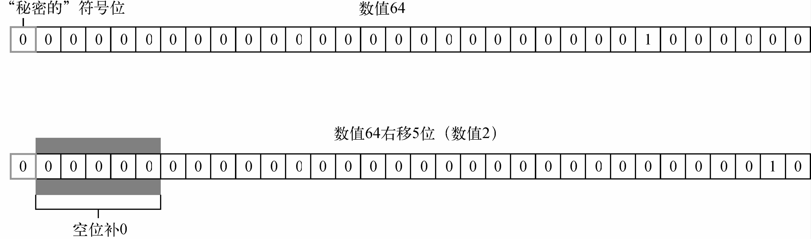

ECMA-262描述了一组可用于操作数据值的操作符，包括数学操作符（如加、减）、位操作符、关系操作符和相等操作符等。ECMAScript中的操作符是独特的，因为它们可用于各种值，包括字符串、数值、布尔值，甚至还有对象。在应用给对象时，操作符通常会调用valueOf()和/或toString()方法来取得可以计算的值。
只操作一个值的操作符叫一元操作符（unary operator）。一元操作符是ECMAScript中最简单的操作符。
递增/递减操作符
递增和递减操作符直接照搬自C语言，但有两个版本：前缀版和后缀版。顾名思义，前缀版就是位于要操作的变量前头，后缀版就是位于要操作的变量后头。前缀递增操作符会给数值加1，把两个加号（++）放到变量前头即可：
let age = 29;
++age;在这个例子中，前缀递增操作符把age的值变成了30（给之前的值29加1）。因此，它实际上等于如下表达式：
let age = 29;
age = age + 1;前缀递减操作符也类似，只不过是从一个数值减1。使用前缀递减操作符，只要把两个减号（--）放到变量前头即可：
let age = 29;
--age;执行操作后，变量age的值变成了28（从29减1）。
无论使用前缀递增还是前缀递减操作符，变量的值都会在语句被求值之前改变。（在计算机科学中，这通常被称为具有副作用。）请看下面的例子：
let age = 29;
let anotherage = --age + 2;
console.log(age); // 28
console.log(anotherage); // 30在这个例子中，变量anotherAge以age减1后的值再加2进行初始化。因为递减操作先发生，所以age的值先变成28，然后再加2，结果是30。
前缀递增和递减在语句中的优先级是相等的，因此会从左到右依次求值。比如：
let num1 = 2;
let num2 = 20;
let num3 = --num1 + num2;
let num4 = num1 + num2;
console.log(num3); // 21
console.log(num4); // 21这里，num3等于21是因为num1先减1之后才加num2。变量num4也是21，那是因为加法使用的也是递减后的值。
递增和递减的后缀版语法一样（分别是++和--），只不过要放在变量后面。后缀版与前缀版的主要区别在于，后缀版递增和递减在语句被求值后才发生。在某些情况下，这种差异没什么影响，比如：
let age = 29;
age++;把递增操作符放到变量后面不会改变语句执行的结果，因为递增是唯一的操作。可是，在跟其他操作混合时，差异就会变明显，比如：
let num1 = 2;
let num2 = 20;
let num3 = num1-- + num2;
let num4 = num1 + num2;
console.log(num3); // 22
console.log(num4); // 21这个例子跟前面的那个一样，只是把前缀递减改成了后缀递减，区别很明显。在使用前缀版的例子中，num3和num4的值都是21。而在这个例子中，num3的值是22，num4的值是21。这里的不同之处在于，计算num3时使用的是num1的原始值（2），而计算num4时使用的是num1递减后的值（1）。
这4个操作符可以作用于任何值，意思是不限于整数——字符串、布尔值、浮点值，甚至对象都可以。递增和递减操作符遵循如下规则。
NaN。变量类型从字符串变成数值。false，则转换为0再应用改变。变量类型从布尔值变成数值。true，则转换为1再应用改变。变量类型从布尔值变成数值。valueOf()方法取得可以操作的值。对得到的值应用上述规则。如果是NaN，则调用toString()并再次应用其他规则。变量类型从对象变成数值。下面的例子演示了这些规则：
let s1 = "2";
let s2 = "z";
let b = false;
let f = 1.1;
let o = {
valueof() {
return -1;
}
};
s1++; // 值变成数值3
s2++; // 值变成nan
b++; // 值变成数值1
f--; // 值变成0.10000000000000009（因为浮点数不精确）
o--; // 值变成-2一元加和减
一元加和减操作符对大多数开发者来说并不陌生，它们在ECMAScript中跟在高中数学中的用途一样。一元加由一个加号（+）表示，放在变量前头，对数值没有任何影响：
let num = 25;
num = +num;
console.log(num); // 25如果将一元加应用到非数值，则会执行与使用Number()转型函数一样的类型转换：布尔值false和true转换为0和1，字符串根据特殊规则进行解析，对象会调用它们的valueOf()和/或toString()方法以得到可以转换的值。
下面的例子演示了一元加在应用到不同数据类型时的行为：
let s1 = "01";
let s2 = "1.1";
let s3 = "z";
let b = false;
let f = 1.1;
let o = {
valueof() {
return -1;
}
};
s1 = +s1; // 值变成数值1
s2 = +s2; // 值变成数值1.1
s3 = +s3; // 值变成nan
b = +b; // 值变成数值0
f = +f; // 不变，还是1.1
o = +o; // 值变成数值-1一元减由一个减号（-）表示，放在变量前头，主要用于把数值变成负值，如把1转换为-1。示例如下：
let num = 25;
num = -num;
console.log(num); // -25对数值使用一元减会将其变成相应的负值（如上面的例子所示）。在应用到非数值时，一元减会遵循与一元加同样的规则，先对它们进行转换，然后再取负值：
let s1 = "01";
let s2 = "1.1";
let s3 = "z";
let b = false;
let f = 1.1;
let o = {
valueof() {
return -1;
}
};
s1 = -s1; // 值变成数值-1
s2 = -s2; // 值变成数值-1.1
s3 = -s3; // 值变成nan
b = -b; // 值变成数值0
f = -f; // 变成-1.1
o = -o; // 值变成数值1一元加和减操作符主要用于基本的算术，但也可以像上面的例子那样，用于数据类型转换。
接下来要介绍的操作符用于数值的底层操作，也就是操作内存中表示数据的比特（位）。ECMAScript中的所有数值都以IEEE 754 64位格式存储，但位操作并不直接应用到64位表示，而是先把值转换为32位整数，再进行位操作，之后再把结果转换为64位。对开发者而言，就好像只有32位整数一样，因为64位整数存储格式是不可见的。既然知道了这些，就只需要考虑32位整数即可。
有符号整数使用32位的前31位表示整数值。第32位表示数值的符号，如0表示正，1表示负。这一位称为符号位（sign bit），它的值决定了数值其余部分的格式。正值以真正的二进制格式存储，即31位中的每一位都代表2的幂。第一位（称为第0位）表示20，第二位表示21，依此类推。如果一个位是空的，则以0填充，相当于忽略不计。比如，数值18的二进制格式为00000000000000000000000000010010，或更精简的10010。后者是用到的5个有效位，决定了实际的值（如图3-1所示）。
图 3-1
负值以一种称为二补数（或补码）的二进制编码存储。一个数值的二补数通过如下3个步骤计算得到：
(1) 确定绝对值的二进制表示（如，对于-18，先确定18的二进制表示）；
(2) 找到数值的一补数（或反码），换句话说，就是每个0都变成1，每个1都变成0；
(3) 给结果加1。
基于上述步骤确定-18的二进制表示，首先从18的二进制表示开始：
0000 0000 0000 0000 0000 0000 0001 0010然后，计算一补数，即反转每一位的二进制值：
1111 1111 1111 1111 1111 1111 1110 1101最后，给一补数加1：
1111 1111 1111 1111 1111 1111 1110 1101
1
----------------------------------------------
1111 1111 1111 1111 1111 1111 1110 1110那么，-18的二进制表示就是11111111111111111111111111101110。要注意的是，在处理有符号整数时，我们无法访问第31位。
ECMAScript会帮我们记录这些信息。在把负值输出为一个二进制字符串时，我们会得到一个前面加了减号的绝对值，如下所示：
let num = -18;
console.log(num.tostring(2)); // "-10010"在将-18转换为二进制字符串时，结果得到-10010。转换过程会求得二补数，然后再以更符合逻辑的形式表示出来。
注意 默认情况下，ECMAScript中的所有整数都表示为有符号数。不过，确实存在无符号整数。对无符号整数来说，第32位不表示符号，因为只有正值。无符号整数比有符号整数的范围更大，因为符号位被用来表示数值了。
在对ECMAScript中的数值应用位操作符时，后台会发生转换：64位数值会转换为32位数值，然后执行位操作，最后再把结果从32位转换为64位存储起来。整个过程就像处理32位数值一样，这让二进制操作变得与其他语言中类似。但这个转换也导致了一个奇特的副作用，即特殊值NaN和Infinity在位操作中都会被当成0处理。
如果将位操作符应用到非数值，那么首先会使用Number()函数将该值转换为数值（这个过程是自动的），然后再应用位操作。最终结果是数值。
按位非
按位非操作符用波浪符（~）表示，它的作用是返回数值的一补数。按位非是ECMAScript中为数不多的几个二进制数学操作符之一。看下面的例子：
let num1 = 25; // 二进制00000000000000000000000000011001
let num2 = ~num1; // 二进制11111111111111111111111111100110
console.log(num2); // -26这里，按位非操作符作用到了数值25，得到的结果是-26。由此可以看出，按位非的最终效果是对数值取反并减1，就像执行如下操作的结果一样：
let num1 = 25;
let num2 = -num1 - 1;
console.log(num2); // "-26"实际上，尽管两者返回的结果一样，但位操作的速度快得多。这是因为位操作是在数值的底层表示上完成的。
按位与
按位与操作符用和号（&）表示，有两个操作数。本质上，按位与就是将两个数的每一个位对齐，然后基于真值表中的规则，对每一位执行相应的与操作。
| 第一个数值的位 | 第二个数值的位 | 结果 |
|---|---|---|
| 1 | 1 | 1 |
| 1 | 0 | 0 |
| 0 | 1 | 0 |
| 0 | 0 | 0 |
按位与操作在两个位都是1时返回1，在任何一位是0时返回0。
下面看一个例子，我们对数值25和3求与操作，如下所示：
let result = 25 & 3;
console.log(result); // 125和3的按位与操作的结果是1。为什么呢？看下面的二进制计算过程：
25 = 0000 0000 0000 0000 0000 0000 0001 1001 3 = 0000 0000 0000 0000 0000 0000 0000 0011 --------------------------------------------- and = 0000 0000 0000 0000 0000 0000 0000 0001
如上所示，25和3的二进制表示中，只有第0位上的两个数都是1。于是结果数值的所有其他位都会以0填充，因此结果就是1。
按位或
按位或操作符用管道符（|）表示，同样有两个操作数。按位或遵循如下真值表：
| 第一个数值的位 | 第二个数值的位 | 结果 |
|---|---|---|
| 1 | 1 | 1 |
| 1 | 0 | 1 |
| 0 | 1 | 1 |
| 0 | 0 | 0 |
按位或操作在至少一位是1时返回1，两位都是0时返回0。
仍然用按位与的示例，如果对25和3执行按位或，代码如下所示：
let result = 25 | 3;
console.log(result); // 27可见25和3的按位或操作的结果是27：
25 = 0000 0000 0000 0000 0000 0000 0001 1001 3 = 0000 0000 0000 0000 0000 0000 0000 0011 --------------------------------------------- or = 0000 0000 0000 0000 0000 0000 0001 1011
在参与计算的两个数中，有4位都是1，因此它们直接对应到结果上。二进制码11011等于27。
按位异或
按位异或用脱字符（^）表示，同样有两个操作数。下面是按位异或的真值表：
| 第一个数的位 | 第二个数的位 | 结果 |
|---|---|---|
| 1 | 1 | 0 |
| 1 | 0 | 1 |
| 0 | 1 | 1 |
| 0 | 0 | 0 |
按位异或与按位或的区别是，它只在一位上是1的时候返回1（两位都是1或0，则返回0）。
对数值25和3执行按位异或操作：
let result = 25 ^ 3;
console.log(result); // 26可见，25和3的按位异或操作结果为26，如下所示：
25 = 0000 0000 0000 0000 0000 0000 0001 1001 3 = 0000 0000 0000 0000 0000 0000 0000 0011 --------------------------------------------- xor = 0000 0000 0000 0000 0000 0000 0001 1010
两个数在4位上都是1，但两个数的第0位都是1，因此那一位在结果中就变成了0。其余位上的1在另一个数上没有对应的1，因此会直接传递到结果中。二进制码11010等于26。（注意，这比对同样两个值执行按位或操作得到的结果小1。）
左移
左移操作符用两个小于号（<<）表示，会按照指定的位数将数值的所有位向左移动。比如，如果数值2（二进制10）向左移5位，就会得到64（二进制1000000），如下所示：
let oldvalue = 2; // 等于二进制10
let newvalue = oldvalue << 5; // 等于二进制1000000，即十进制64注意在移位后，数值右端会空出5位。左移会以0填充这些空位，让结果是完整的32位数值（见图3-2）。
图 3-2
注意，左移会保留它所操作数值的符号。比如，如果-2左移5位，将得到-64，而不是正64。
有符号右移
有符号右移由两个大于号（>>）表示，会将数值的所有32位都向右移，同时保留符号（正或负）。有符号右移实际上是左移的逆运算。比如，如果将64右移5位，那就是2：
let oldvalue = 64; // 等于二进制1000000
let newvalue = oldvalue >> 5; // 等于二进制10，即十进制2同样，移位后就会出现空位。不过，右移后空位会出现在左侧，且在符号位之后（见图3-3）。ECMAScript会用符号位的值来填充这些空位，以得到完整的数值。

图 3-3
无符号右移
无符号右移用3个大于号表示（>>>），会将数值的所有32位都向右移。对于正数，无符号右移与有符号右移结果相同。仍然以前面有符号右移的例子为例，64向右移动5位，会变成2：
let oldvalue = 64; // 等于二进制1000000
let newvalue = oldvalue >>> 5; // 等于二进制10，即十进制2对于负数，有时候差异会非常大。与有符号右移不同，无符号右移会给空位补0，而不管符号位是什么。对正数来说，这跟有符号右移效果相同。但对负数来说，结果就差太多了。无符号右移操作符将负数的二进制表示当成正数的二进制表示来处理。因为负数是其绝对值的二补数，所以右移之后结果变得非常之大，如下面的例子所示：
let oldvalue = -64; // 等于二进制11111111111111111111111111000000
let newvalue = oldvalue >>> 5; // 等于十进制134217726在对-64无符号右移5位后，结果是134 217 726。这是因为-64的二进制表示是11111111111111111111111111000000，无符号右移却将它当成正值，也就是4 294 967 232。把这个值右移5位后，结果是00000111111111111111111111111110，即134 217 726。
对于编程语言来说，布尔操作符跟相等操作符几乎同样重要。如果没有能力测试两个值的关系，那么像if-else和循环这样的语句也没什么用了。布尔操作符一共有3个：逻辑非、逻辑与和逻辑或。
逻辑非
逻辑非操作符由一个叹号（!）表示，可应用给ECMAScript中的任何值。这个操作符始终返回布尔值，无论应用到的是什么数据类型。逻辑非操作符首先将操作数转换为布尔值，然后再对其取反。换句话说，逻辑非操作符会遵循如下规则。
false。true。false。true。Infinity），则返回false。null，则返回true。NaN，则返回true。undefined，则返回true。以下示例验证了上述行为：
console.log(!false); // true
console.log(!"blue"); // false
console.log(!0); // true
console.log(!nan); // true
console.log(!""); // true
console.log(!12345); // false逻辑非操作符也可以用于把任意值转换为布尔值。同时使用两个叹号（!!），相当于调用了转型函数Boolean()。无论操作数是什么类型，第一个叹号总会返回布尔值。第二个叹号对该布尔值取反，从而给出变量真正对应的布尔值。结果与对同一个值使用Boolean()函数是一样的：
console.log(!!"blue"); // true
console.log(!!0); // false
console.log(!!nan); // false
console.log(!!""); // false
console.log(!!12345); // true逻辑与
逻辑与操作符由两个和号（&&）表示，应用到两个值，如下所示：
let result = true && false;逻辑与操作符遵循如下真值表：
| 第一个操作数 | 第二个操作数 | 结果 |
|---|---|---|
true
|
true
|
true
|
true
|
false
|
false
|
false
|
true
|
false
|
false
|
false
|
false
|
逻辑与操作符可用于任何类型的操作数，不限于布尔值。如果有操作数不是布尔值，则逻辑与并不一定会返回布尔值，而是遵循如下规则。
true才会返回该对象。null，则返回null。NaN，则返回NaN。undefined，则返回undefined。逻辑与操作符是一种短路操作符，意思就是如果第一个操作数决定了结果，那么永远不会对第二个操作数求值。对逻辑与操作符来说，如果第一个操作数是false，那么无论第二个操作数是什么值，结果也不可能等于true。看下面的例子：
let found = true;
let result = (found && someundeclaredvariable); // 这里会出错
console.log(result); // 不会执行这一行上面的代码之所以会出错，是因为someUndeclaredVariable没有事先声明，所以当逻辑与操作符对它求值时就会报错。变量found的值是true，逻辑与操作符会继续求值变量someUndeclaredVariable。但是由于someUndeclaredVariable没有定义，不能对它应用逻辑与操作符，因此就报错了。假如变量found的值是false，那么就不会报错了：
let found = false;
let result = (found && someundeclaredvariable); // 不会出错
console.log(result); // 会执行这里，console.log会成功执行。即使变量someUndeclaredVariable没有定义，由于第一个操作数是false，逻辑与操作符也不会对它求值，因为此时对&&右边的操作数求值是没有意义的。在使用逻辑与操作符时，一定别忘了它的这个短路的特性。
逻辑或
逻辑或操作符由两个管道符（||）表示，比如：
let result = true || false;逻辑或操作符遵循如下真值表：
| 第一个操作数 | 第二个操作数 | 结果 |
|---|---|---|
true
|
true
|
true
|
true
|
false
|
true
|
false
|
true
|
true
|
false
|
false
|
false
|
与逻辑与类似，如果有一个操作数不是布尔值，那么逻辑或操作符也不一定返回布尔值。它遵循如下规则。
false，则返回第二个操作数。null，则返回null。NaN，则返回NaN。undefined，则返回undefined。同样与逻辑与类似，逻辑或操作符也具有短路的特性。只不过对逻辑或而言，第一个操作数求值为true，第二个操作数就不会再被求值了。看下面的例子：
let found = true;
let result = (found || someundeclaredvariable); // 不会出错
console.log(result); // 会执行跟前面的例子一样，变量someUndeclaredVariable也没有定义。但是，因为变量found的值为true，所以逻辑或操作符不会对变量someUndeclaredVariable求值，而直接返回true。假如把found的值改为false，那就会报错了：
let found = false;
let result = (found || someundeclaredvariable); // 这里会出错
console.log(result); // 不会执行这一行利用这个行为，可以避免给变量赋值null或undefined。比如：
let myobject = preferredobject || backupobject;在这个例子中，变量myObject会被赋予两个值中的一个。其中，preferredObject变量包含首选的值，backupObject变量包含备用的值。如果preferredObject不是null，则它的值就会赋给myObject；如果preferredObject是null，则backupObject的值就会赋给myObject。这种模式在ECMAScript代码中经常用于变量赋值，本书后面的代码示例中也会经常用到。
ECMAScript定义了3个乘性操作符：乘法、除法和取模。这些操作符跟它们在Java、C语言及Perl中对应的操作符作用一样，但在处理非数值时，它们也会包含一些自动的类型转换。如果乘性操作符有不是数值的操作数，则该操作数会在后台被使用Number()转型函数转换为数值。这意味着空字符串会被当成0，而布尔值true会被当成1。
乘法操作符
乘法操作符由一个星号（*）表示，可以用于计算两个数值的乘积。其语法类似于C语言，比如：
let result = 34 * 56;不过，乘法操作符在处理特殊值时也有一些特殊的行为。
Infinity或-Infinity。NaN，则返回NaN。Infinity乘以0，则返回NaN。Infinity乘以非0的有限数值，则根据第二个操作数的符号返回Infinity或-Infinity。Infinity乘以Infinity，则返回Infinity。Number()将其转换为数值，然后再应用上述规则。除法操作符
除法操作符由一个斜杠（/）表示，用于计算第一个操作数除以第二个操作数的商，比如：
let result = 66 / 11;跟乘法操作符一样，除法操作符针对特殊值也有一些特殊的行为。
Infinity或-Infinity。NaN，则返回NaN。Infinity除以Infinity，则返回NaN。NaN。Infinity或-Infinity。Infinity除以任何数值，则根据第二个操作数的符号返回Infinity或-Infinity。Number()函数将其转换为数值，然后再应用上述规则。取模操作符
取模（余数）操作符由一个百分比符号（%）表示，比如：
let result = 26 % 5; // 等于1与其他乘性操作符一样，取模操作符对特殊值也有一些特殊的行为。
NaN。NaN。Infinity除以Infinity，则返回NaN。Number()函数将其转换为数值，然后再应用上述规则。ECMAScript 7新增了指数操作符，Math.pow()现在有了自己的操作符**，结果是一样的：
console.log(math.pow(3, 2); // 9
console.log(3 ** 2); // 9
console.log(math.pow(16, 0.5); // 4
console.log(16** 0.5); // 4不仅如此，指数操作符也有自己的指数赋值操作符**=，该操作符执行指数运算和结果的赋值操作：
let squared = 3;
squared **= 2;
console.log(squared); // 9
let sqrt = 16;
sqrt **= 0.5;
console.log(sqrt); // 4加性操作符，即加法和减法操作符，一般都是编程语言中最简单的操作符。不过，在ECMAScript中，这两个操作符拥有一些特殊的行为。与乘性操作符类似，加性操作符在后台会发生不同数据类型的转换。只不过对这两个操作符来说，转换规则不是那么直观。
加法操作符
加法操作符（+）用于求两个数的和，比如：
let result = 1 + 2;如果两个操作数都是数值，加法操作符执行加法运算并根据如下规则返回结果：
NaN，则返回NaN；Infinity加Infinity，则返回Infinity；-Infinity加-Infinity，则返回-Infinity；Infinity加-Infinity，则返回NaN；+0加+0，则返回+0；-0加+0，则返回+0；-0加-0，则返回-0。不过，如果有一个操作数是字符串，则要应用如下规则：
如果有任一操作数是对象、数值或布尔值，则调用它们的toString()方法以获取字符串，然后再应用前面的关于字符串的规则。对于undefined和null，则调用String()函数，分别获取"undefined"和"null"。
看下面的例子：
let result1 = 5 + 5; // 两个数值
console.log(result1); // 10
let result2 = 5 + "5"; // 一个数值和一个字符串
console.log(result2); // "55"以上代码展示了加法操作符的两种运算模式。正常情况下，5 + 5等于10（数值），如前两行代码所示。但是，如果将一个操作数改为字符串，比如"5"，则相加的结果就变成了"55"（原始字符串值），因为第一个操作数也会被转换为字符串。
ECMAScript中最常犯的一个错误，就是忽略加法操作中涉及的数据类型。比如下面这个例子：
let num1 = 5;
let num2 = 10;
let message = "the sum of 5 and 10 is " + num1 + num2;
console.log(message); // "the sum of 5 and 10 is 510"这里，变量message中保存的是一个字符串，是执行两次加法操作之后的结果。有人可能会认为最终得到的字符串是"The sum of 5 and 10 is 15"。可是，实际上得到的是"The sum of 5 and 10 is 510"。这是因为每次加法运算都是独立完成的。第一次加法的操作数是一个字符串和一个数值（5），结果还是一个字符串。第二次加法仍然是用一个字符串去加一个数值（10），同样也会得到一个字符串。如果想真正执行数学计算，然后把结果追加到字符串末尾，只要使用一对括号即可：
let num1 = 5;
let num2 = 10;
let message = "the sum of 5 and 10 is " + (num1 + num2);
console.log(message); // "the sum of 5 and 10 is 15"在此，我们用括号把两个数值变量括了起来，意思是让解释器先执行两个数值的加法，然后再把结果追加给字符串。因此，最终得到的字符串变成了"The sum of 5 and 10 is 15"。
减法操作符
减法操作符（-）也是使用很频繁的一种操作符，比如：
let result = 2 - 1;与加法操作符一样，减法操作符也有一组规则用于处理ECMAScript中不同类型之间的转换。
NaN，则返回NaN。Infinity减Infinity，则返回NaN。-Infinity减-Infinity，则返回NaN。Infinity减-Infinity，则返回Infinity。-Infinity减Infinity，则返回-Infinity。+0减+0，则返回+0。+0减-0，则返回-0。-0减-0，则返回+0。null或undefined，则先在后台使用Number()将其转换为数值，然后再根据前面的规则执行数学运算。如果转换结果是NaN，则减法计算的结果是NaN。valueOf()方法取得表示它的数值。如果该值是NaN，则减法计算的结果是NaN。如果对象没有valueOf()方法，则调用其toString()方法，然后再将得到的字符串转换为数值。以下示例演示了上面的规则：
let result1 = 5 - true; // true被转换为1，所以结果是4
let result2 = nan - 1; // nan
let result3 = 5 - 3; // 2
let result4 = 5 - ""; // ""被转换为0，所以结果是5
let result5 = 5 - "2"; // "2"被转换为2，所以结果是3
let result6 = 5 - null; // null被转换为0，所以结果是5关系操作符执行比较两个值的操作，包括小于（<）、大于（>）、小于等于（<=）和大于等于（>=），用法跟数学课上学的一样。这几个操作符都返回布尔值，如下所示：
let result1 = 5 > 3; // true
let result2 = 5 < 3; // false与ECMAScript中的其他操作符一样，在将它们应用到不同数据类型时也会发生类型转换和其他行为。
valueOf()方法，取得结果后再根据前面的规则执行比较。如果没有valueOf()操作符，则调用toString()方法，取得结果后再根据前面的规则执行比较。在使用关系操作符比较两个字符串时，会发生一个有趣的现象。很多人认为小于意味着“字母顺序靠前”，而大于意味着“字母顺序靠后”，实际上不是这么回事。对字符串而言，关系操作符会比较字符串中对应字符的编码，而这些编码是数值。比较完之后，会返回布尔值。问题的关键在于，大写字母的编码都小于小写字母的编码，因此以下这种情况就会发生：
let result = "brick" < "alphabet"; // true在这里，字符串"Brick"被认为小于字符串"alphabet"，因为字母B的编码是66，字母a的编码是97。要得到确实按字母顺序比较的结果，就必须把两者都转换为相同的大小写形式（全大写或全小写），然后再比较：
let result = "brick".tolowercase() < "alphabet".tolowercase(); // false将两个操作数都转换为小写，就能保证按照字母表顺序判定"alphabet"在"Brick"前头。
另一个奇怪的现象是在比较两个数值字符串的时候，比如下面这个例子：
let result = "23" < "3"; // true这里在比较字符串"23"和"3"时返回true。因为两个操作数都是字符串，所以会逐个比较它们的字符编码（字符"2"的编码是50，而字符"3"的编码是51）。不过，如果有一个操作数是数值，那么比较的结果就对了：
let result = "23" < 3; // false因为这次会将字符串"23"转换为数值23，然后再跟3比较，结果当然对了。只要是数值和字符串比较，字符串就会先被转换为数值，然后进行数值比较。对于数值字符串而言，这样能保证结果正确。但如果字符串不能转换成数值呢？比如下面这个例子：
let result = "a" < 3; // 因为"a"会转换为nan，所以结果是false因为字符"a"不能转换成任何有意义的数值，所以只能转换为NaN。这里有一个规则，即任何关系操作符在涉及比较NaN时都返回false。这样一来，下面的例子有趣了：
let result1 = nan < 3; // false
let result2 = nan >= 3; // false在大多数比较的场景中，如果一个值不小于另一个值，那就一定大于或等于它。但在比较NaN时，无论是小于还是大于等于，比较的结果都会返回false。
判断两个变量是否相等是编程中最重要的操作之一。在比较字符串、数值和布尔值是否相等时，过程都很直观。但是在比较两个对象是否相等时，情形就比较复杂了。ECMAScript中的相等和不相等操作符，原本在比较之前会执行类型转换，但很快就有人质疑这种转换是否应该发生。最终，ECMAScript提供了两组操作符。第一组是等于和不等于，它们在比较之前执行转换。第二组是全等和不全等，它们在比较之前不执行转换。
等于和不等于
ECMAScript中的等于操作符用两个等于号（==）表示，如果操作数相等，则会返回true。不等于操作符用叹号和等于号（!=）表示，如果两个操作数不相等，则会返回true。这两个操作符都会先进行类型转换（通常称为强制类型转换）再确定操作数是否相等。
在转换操作数的类型时，相等和不相等操作符遵循如下规则。
false转换为0，true转换为1。valueOf()方法取得其原始值，再根据前面的规则进行比较。在进行比较时，这两个操作符会遵循如下规则。
null和undefined相等。null和undefined不能转换为其他类型的值再进行比较。NaN，则相等操作符返回false，不相等操作符返回true。记住：即使两个操作数都是NaN，相等操作符也返回false，因为按照规则，NaN不等于NaN。true。否则，两者不相等。下表总结了一些特殊情况及比较的结果。
| 表达式 | 结果 |
|---|---|
null == undefined
|
true
|
"NaN" == NaN
|
false
|
5 == NaN
|
false
|
NaN == NaN
|
false
|
NaN != NaN
|
true
|
false == 0
|
true
|
true == 1
|
true
|
true == 2
|
false
|
undefined == 0
|
false
|
null == 0
|
false
|
"5" == 5
|
true
|
全等和不全等
全等和不全等操作符与相等和不相等操作符类似，只不过它们在比较相等时不转换操作数。全等操作符由3个等于号（===）表示，只有两个操作数在不转换的前提下相等才返回true，比如：
let result1 = ("55" == 55); // true，转换后相等
let result2 = ("55" === 55); // false，不相等，因为数据类型不同在这个例子中，第一个比较使用相等操作符，比较的是字符串"55"和数值55。如前所述，因为字符串"55"会被转换为数值55，然后再与数值55进行比较，所以返回true。第二个比较使用全等操作符，因为没有转换，字符串和数值当然不能相等，所以返回false。
不全等操作符用一个叹号和两个等于号（!==）表示，只有两个操作数在不转换的前提下不相等才返回true。比如：
let result1 = ("55" != 55); // false，转换后相等
let result2 = ("55" !== 55); // true，不相等，因为数据类型不同这一次，第一个比较使用不相等操作符，它会把字符串"55"转换为数值55，跟第二个操作数相等。既然转换后两个值相等，那就返回false。第二个比较使用不全等操作符。这时候可以这么问：“字符串55和数值55有区别吗？”答案是“有”（true）。
另外，虽然null == undefined是true（因为这两个值类似），但null === undefined是false，因为它们不是相同的数据类型。
注意 由于相等和不相等操作符存在类型转换问题，因此推荐使用全等和不全等操作符。这样有助于在代码中保持数据类型的完整性。
条件操作符是ECMAScript中用途最为广泛的操作符之一，语法跟Java中一样：
variable = boolean_expression ? true_value : false_value;上面的代码执行了条件赋值操作，即根据条件表达式boolean_expression的值决定将哪个值赋给变量variable。如果boolean_expression是true，则赋值true_value；如果boolean_expression是false，则赋值false_value。比如：
let max = (num1 > num2) ? num1 : num2;在这个例子中，max将被赋予一个最大值。这个表达式的意思是，如果num1大于num2（条件表达式为true），则将num1赋给max。否则，将num2赋给max。
简单赋值用等于号（=）表示，将右手边的值赋给左手边的变量，如下所示：
let num = 10;复合赋值使用乘性、加性或位操作符后跟等于号（=）表示。这些赋值操作符是类似如下常见赋值操作的简写形式：
let num = 10;
num = num + 10;以上代码的第二行可以通过复合赋值来完成：
let num = 10;
num += 10;每个数学操作符以及其他一些操作符都有对应的复合赋值操作符：
*=）/=）%=）+=）-=）<<=）>>=）>>>=）这些操作符仅仅是简写语法，使用它们不会提升性能。
逗号操作符可以用来在一条语句中执行多个操作，如下所示：
let num1 = 1, num2 = 2, num3 = 3;在一条语句中同时声明多个变量是逗号操作符最常用的场景。不过，也可以使用逗号操作符来辅助赋值。在赋值时使用逗号操作符分隔值，最终会返回表达式中最后一个值：
let num = (5, 1, 4, 8, 0); // num的值为0在这个例子中，num将被赋值为0，因为0是表达式中最后一项。逗号操作符的这种使用场景并不多见，但这种行为的确存在。